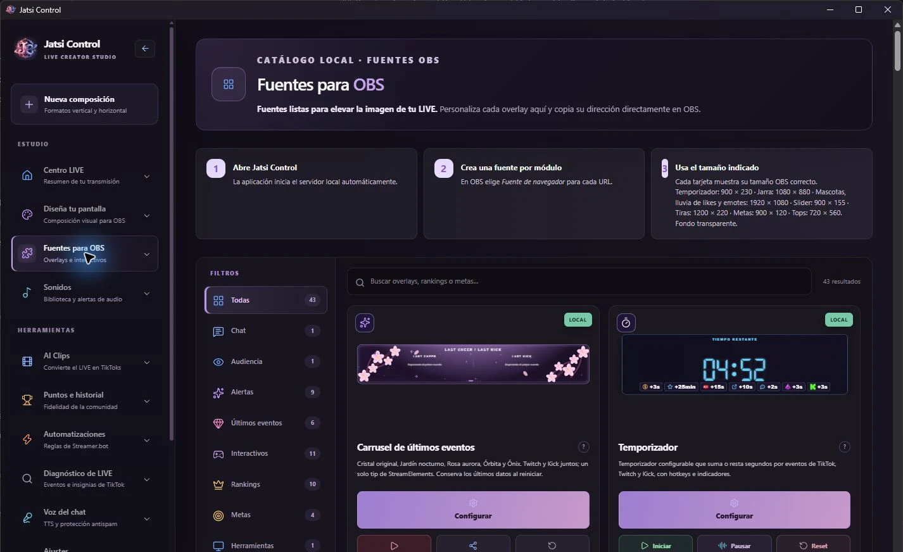
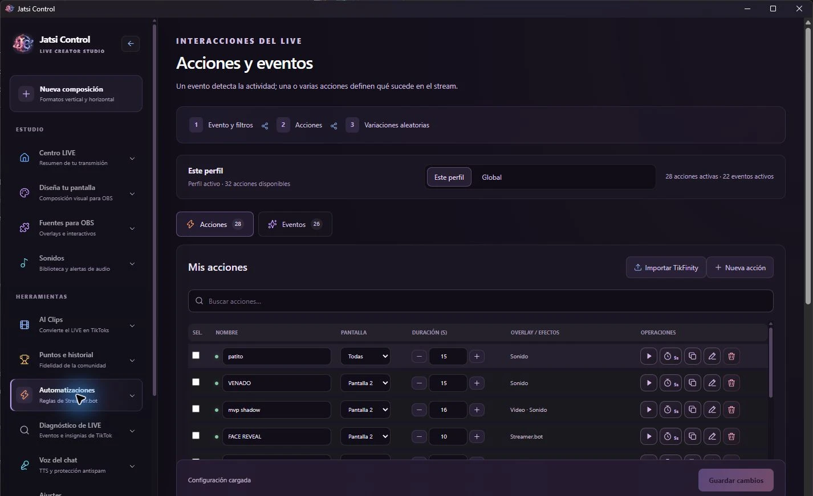
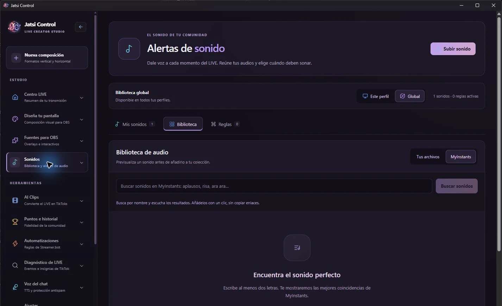
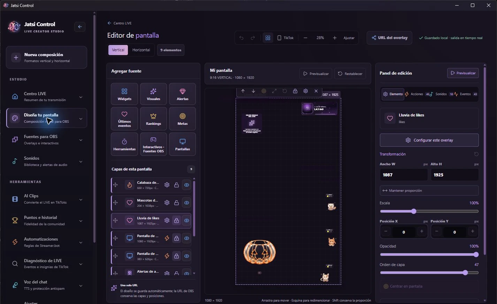

Recibe la energía
Reúne la actividad de tus canales y organiza tu espacio con perfiles para cada creador.
JATSI CONTROL DESKTOP WINDOWS
Convierte lo que pasa en tu comunidad en algo que se ve, se escucha y se vive. Tu estudio de overlays, interacciones y automatizaciones, en una sola aplicación.
TU CONTENIDO, CON TUS HERRAMIENTAS
DE LA INTERACCIÓN A LA EXPERIENCIA
JATSI une lo que sucede en el LIVE con las herramientas de tu estudio. Tú decides cómo responde tu escena a cada momento.
Reúne la actividad de tus canales y organiza tu espacio con perfiles para cada creador.
Prepara eventos y acciones: sonidos, efectos, respuestas e interacciones con tu modelo.
Lleva tus overlays a OBS y convierte las interacciones en parte de la transmisión.
TU ESCENA TIENE PERSONALIDAD
Configura metas, elementos visuales y experiencias interactivas. Combina capas y encuentra la composición que se siente como tu canal.
Overlays para fuentes de navegador
Conecta eventos con acciones. Diseña respuestas para tu contenido y enlaza las aplicaciones que ya forman parte de tu estudio.

Organiza tu biblioteca de sonidos y prepara los momentos que le dan ritmo, humor y una firma propia a tu directo.

TU COMPOSICIÓN, CAPA POR CAPA
Combina widgets, alertas, metas y elementos visuales en el editor de pantalla. Ajusta la posición y prepara una composición vertical u horizontal para tu directo.

TU PRIMER MOMENTO JATSI
Envía likes, recibe un follow o enfrenta dos regalos. Explora una simulación basada en las metas, rankings y alertas de la aplicación actual.
Los valores son ilustrativos para esta simulación.
Una secuencia de 15 s. Empieza cuando tú quieras.
Likes flotantes: cambia la figura, el color y el tamaño; envía likes para verlos ascender.
Una muestra interactiva de diseños de JATSI, simplificada para explorar en la web. En Desktop configuras tus fuentes de navegador, conexiones y acciones para tu LIVE.
Llévalo a tu directoTU FORMA DE CREAR TIENE UN LUGAR
Con cámara, con avatar, con un juego o una buena conversación. Construye la experiencia alrededor de lo que te hace diferente.
Conecta expresiones, movimientos y efectos con VTube Studio, VNyan y TITS. Deja que tu comunidad forme parte del personaje.
Tu universo, más interactivo.Prepara acciones, sonidos y overlays para acompañar la partida. Crea momentos que continúen más allá del chat.
Cada partida, con tu sello.Da una bienvenida, destaca una meta y convierte la participación en parte del ritmo de tu transmisión.
La comunidad también se siente.Organiza canales, perfiles y herramientas en un espacio de escritorio. Empieza con una interacción y amplía tu escena a tu ritmo.
Un estudio que crece contigo.CONECTA LAS PIEZAS DE TU ESTUDIO
Combina plataformas de LIVE, aplicaciones de avatar y herramientas de automatización. Elige las conexiones que necesitas para tu contenido.
Actividad y eventos del directo por canal.
Canales, chat y conexiones de plataforma.
Tus overlays, como fuentes de navegador.
Acciones y automatizaciones del estudio.
Expresiones, objetos y flujos para tu avatar.
Voces y sonidos mediante Control API.
EL SIGUIENTE MOMENTO ES TUYO
Abre la guía, conoce el flujo y da forma a tu próximo directo con JATSI Control Desktop.
Aplicación de escritorio para Windows · Configura solo las integraciones que vayas a utilizar.


Añadir un comentario